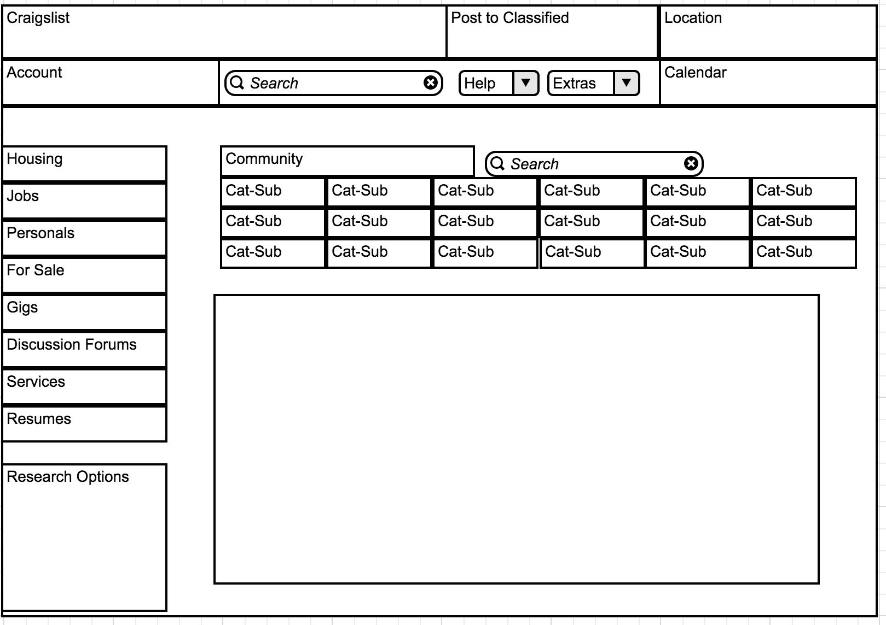
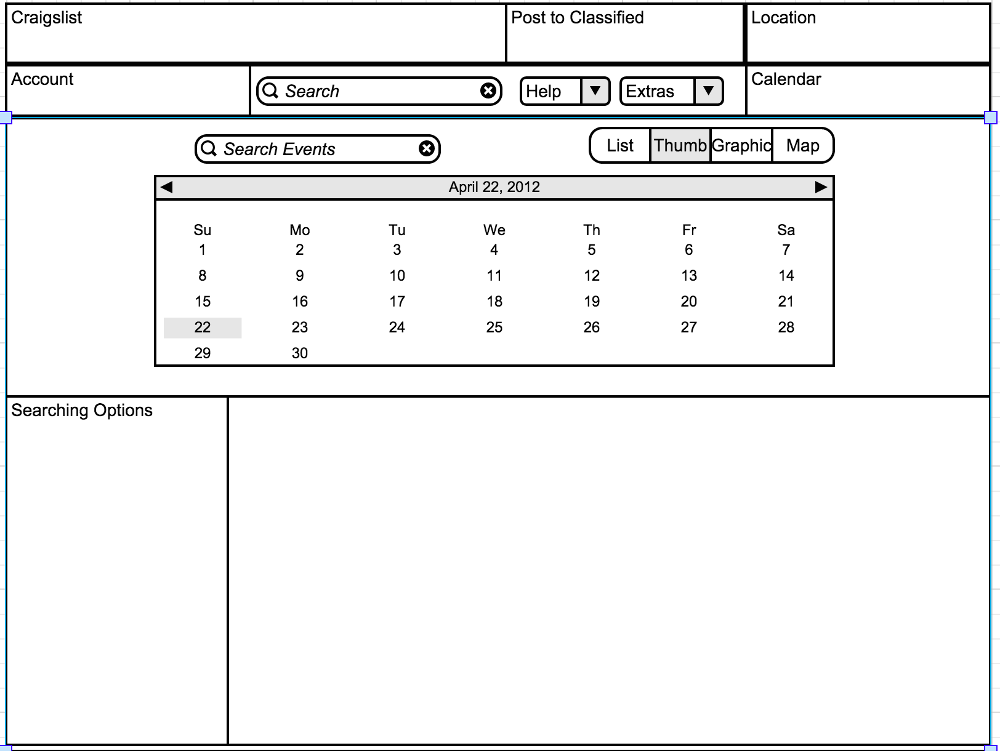

Craiglist Homepage Pre-click: Design
Clicking on a link will shift the links towards the left of the page and reveal a “hidden” page the clicked design title remains on top, and the sub headings appear under this. Under these, the content will appear. Extra add-ons will appear on the left as well. Each of the 9 categories have “shrunk” into their titles only. The header of this page, containing the two rows of content, is static and will appear on all pages for easy and consistent access
Craiglist Homepage Post Click: Design
The categories will remain on the side when clicking and it will refresh the box containing the list or sub categories and content (using ajax to avoid having to refresh the entire page). Clicking on a sub category will add that category to the list, and selected categories will be highlighted. Selecting the category again will de-select it. The search options provided by the site will remain, moved to a box in the bottom left corner to keep list visibility. The list will be placed in an overflow box to keep all options on the page at all times in an organized fashion. The search bar will keep functionality.

Craiglist Events Page: Design
The page calendar will be a map: visited days will be highlighted while they are being viewed. Clicking the day again will deselect it and remove it from the content view, using ajax to reload the box which will be cssed to use overflow. Content organization will remain the same list format, and items to modify the search bar will remain in the left column.
